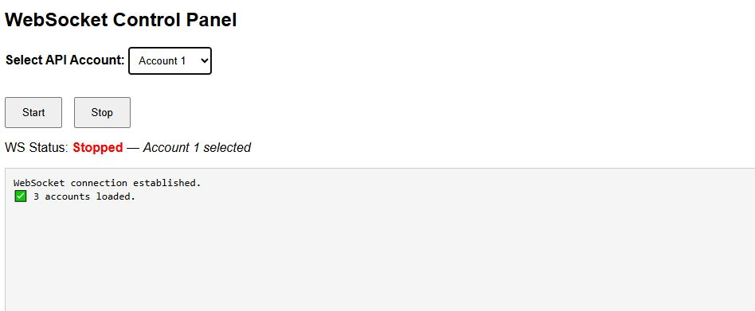

Bahçedeki karınca kolonisi
Bugün bahçedeki karınca kolonisini izledim. İşçi karıncaların yiyecek taşıma düzeni oldukça organizeydi.

Bu, örnek bir yazı. Yönetim panelinden (http://127.0.0.1:8000) düzenleyip kendi gözlemlerinizi ve fotoğraflarınızı ekleyebilirsiniz. Görsel eklemek için panelden yükleyin; metnin üstüne ya da altına otomatik olarak yerleştirilir.
← Tüm yazılar